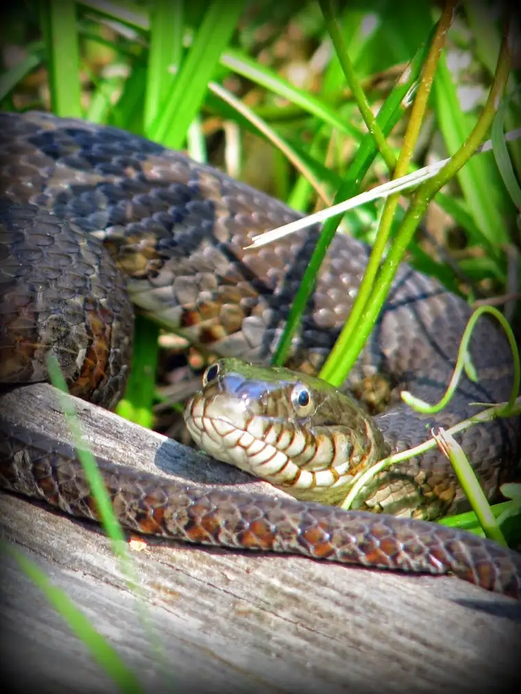

{kind=link}
News flash: In the end, the devil really does lose. And he not only loses but he loses big.
 |
| “Oops! Foiled again. Back to the drawing board!” |
{kind=link}
If you missed it, I’ll try to catch you up a bit.
Early last week, many Catholics and other people of good will watched with great concern as Harvard prepared to accommodate a group of Satanists invited by a student group to perform a black Mass in the guise of “education” on campus.
I won’t go into too many of the details because you can find plenty of that elsewhere. Like here and here. But for Catholics, who believe the Mass brings the body, blood, soul and divinity of Jesus into our very midst, our hearts were extremely heavy as we anticipated the taunting and tainting of our Lord.
Many of us wondered if the devil was going to have his way, and whether anyone else cared as much as we did. How much did other Christians understand that this would affect them too?
Actually, it’s not even a religious thing so much as a human thing. One of my former college journalism professors was first to emerge to defend Harvard on Facebook with a, “Sorry honey, it’s free speech all the way or none at all.”
Ouch. Really? That’s what I was meant to take away from my journalism studies? That there are no bounds with freedom? That we have a right to trample over one another and call it good?
As a human being, I’m not buying it. As a Christian, I can’t. This is not what our good Lord had in mind for our world.
So what did we do in response? We drew from our most powerful pockets of our arsenal bag: prayer. And we unleashed the powers of good through our petitions, asking God to intervene, since it seemed humans would not.
I went to a concert that night. Despite my deep concern over what was taking place on the East Coast, I was able to thoroughly enjoy the beautiful sounds of a high school spring pops concert. The music of youth brought me back to a place of hope.
When I returned home, I was elated to learn the whole thing had been called off. The black Mass wasn’t going to happen at Harvard after all.
Just like that, it was over. Like a whimper rather than a roar, as my cousin pointed out.
Well, there were reports the black Mass still happened, a little ways off campus in the upper level of a Chinese restaurant.
“About 50 people, mostly dressed in black and some wearing face makeup, were present for the ceremony,” noted the Harvard Crimson. “Four individuals in hoods and one man in a white suit, a cape, and a horned mask were active in the proceedings, as well as a woman revealed to be wearing only lingerie.”
Um, okay?
A friend of mine made up her own subheading in response to this piece: “Not wanting to waste the rental fee for the white cape and horns, ‘Lucien’ and his pals repaired to a room in a Chinese restaurant. I suppose they had to sub in a fortune cookie.”
Though we couldn’t help but giggle a little as we let ourselves feel the joy of victory, I realize all too well that the heart of this story is very serious, and I really dislike victory gushing when it’s at the expense of others. But in this case? I think it’s merited.
Being relegated to a corner of a Chinese restaurant, this God-hating group seemed to meet a rather anticlimactic end. As blogger Simcha Fisher put it here: “All in all, the story reminds me of one of those fairy tales where the dragon gets smaller and smaller until it becomes an insignificant lizard that scuttles away through a crack in the floor.”
Yep. That’s pretty much the visual I had too.
And it’s no wonder. When you mess with the God of the universe…
He’s a good God, a loving God, but he sees it all, and he knows who’s on his side and who’s not.
And yes, it matters. And yes, heaven is real and so is hell. And yes, I know where I want to end up.
That said, maybe it’s not too late for the hooded peeps. After all, one of the primary, early propagators of the black Mass ended up, in the end, as a happy Catholic, clinging tightly to the Lord before his death, as this piece by Elizabeth Scalia points out.
It could happen.
Pray without ceasing, knowing all is in God’s hands. There are plenty of battles we Christians lose. This one turned out to be a victory for us, and we deserve to hold high the cross right now.
Q4U: Do you feel freedom of speech should be a free for all, or come with some bounds?